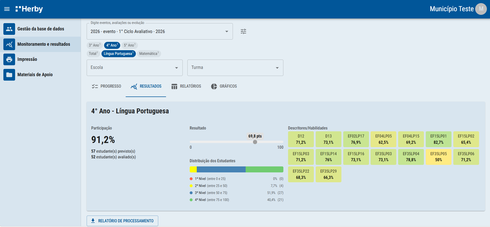

Visão geral
Este é o lugar onde os gestores acompanham o progresso de toda a avaliação, acessam gráficos, relatórios e baixam os resultados. E tudo em tempo real!

Visão geral dos resultados das avaliações por etapa, disciplina e participação.
Este é o lugar onde os gestores acompanham o progresso de toda a avaliação, acessam gráficos, relatórios e baixam os resultados. E tudo em tempo real!
Nesta aba, será possível visualizar de forma detalhada os resultados das avaliações, separados por etapa e disciplina. Os dados principais são:
